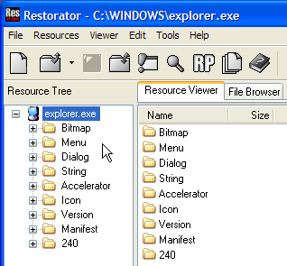
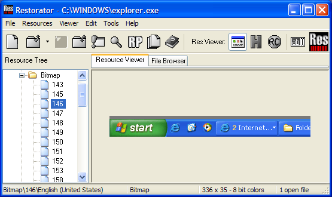
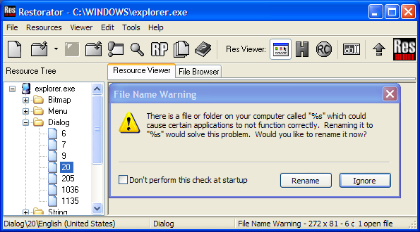
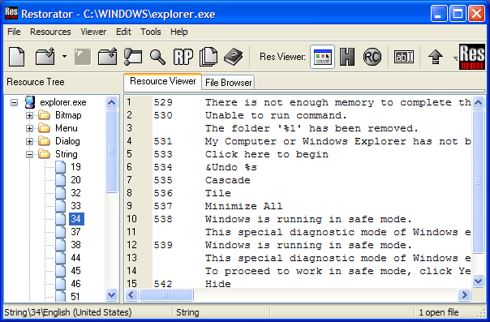
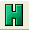
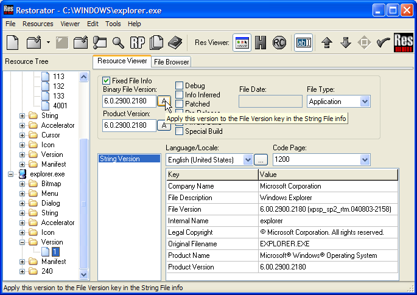

|
Help Overview Manual Tutorials FAQ Purchase Restorator Web |
Restorator
Exploring Resources Tutorial
Tutorial: Exploring the resources of Explorer
The first example demonstrates how you open a file in Restorator and how to explore the resources.
When you have started Restorator, invoke the open file dialog. You can do that by clicking on the open tool button .
.
You can now choose the file that contains resources you would like to work with. For this tutorial, select C:\Windows\Explorer.exe. This is your Windows file explorer.
 |
| When you hit OK,
all resources of the explorer will be displayed in in the
Resource Tree.
You can see that Explorer has Resources of types Bitmap, Menu, Dialog, String, Accelerators, Icon and Version. You can now explorer all the 'ingredients' of this application. |
 |
Now to see the list of images, click on "Bitmap".

The Resource Viewer displays the list of images. Every entry on
the right side correspands to an image that is can be displayed by
the application. They are identified by numbers, 143, 149,
etc. You can see the size and a description of each
bitmap.
To see the images, click on the "+" next to "Bitmap" and select an image:

There are some strange images, maybe you recognize some of them
?
With the same method, you can look at the other resources of Explorer. You will see the different methods to display the resources. Here are some examples:
Menus (as
text)

Dialogs (as
real dialogs)

Strings (as
text)

Accelerators

There are different ways to look at resources choose the Viewer
menu item to explore them. You can also display any resource as hex
dump by clicking the Hexdump toool button .
Icons (as icon
with choice which format and which background color for
display)

Version information

You now have an idea of what resources are and how they are displayed in Restorator. Follow the next tutorials to learn how to find and modify them.
Copyright 1997-2007 by bome.com